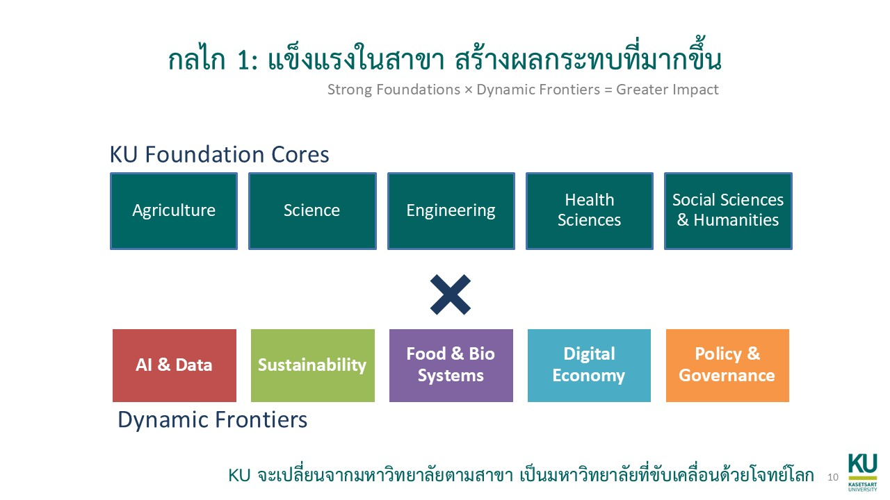

กลไกที่ 1
แข็งแรงในสาขา สร้างผลกระทบที่มากขึ้น

กลไกนี้เป็น academic engine ของมหาวิทยาลัย เริ่มจากหลักง่าย ๆ ว่า KU จะสร้างผลกระทบมากขึ้นได้ ต้องทำให้ฐานสาขาของตัวเองแข็งแรงจริงก่อน แต่ฐานอย่างเดียวไม่พอ ถ้าไม่เชื่อมกับโจทย์โลกใหม่ ศักยภาพนั้นก็จะไม่ถูกแปลงเป็น impact ที่มากพอ
Foundation Cores คือความรู้ฐานที่อยู่ได้นานและเป็นรากของวิชาชีพ ส่วน Dynamic Frontiers คือชั้นที่ใช้เชื่อมฐานเดิมเข้ากับโจทย์ที่กำลังเร่งตัว เช่น AI และข้อมูล ความยั่งยืน อาหารและระบบชีวภาพ เศรษฐกิจดิจิทัล หรือ policy และ governance
จุดสำคัญคือ frontier ไม่ใช่การตั้งหน่วยใหม่ไปเรื่อย ๆ แต่คือการทำให้ core เดิม เข้าไปอยู่ในโลกใหม่อย่างมีพลังขึ้น เช่น เกษตรที่เชื่อมกับ sensor, AI, value chain, economics, law, และตลาด ไม่ใช่เกษตรแบบแยกส่วนเหมือนเดิม
ในอีกชั้นหนึ่ง ภาควิชาที่เป็น core ของตัวเองก็อาจเป็น patch provider ให้ภาคอื่นได้ ถ้ามหาวิทยาลัยมีกลไกที่ทำให้คนคุยกันรู้เรื่อง เห็นประโยชน์ร่วมกัน และพัฒนาออกมาเป็นวิชาใหม่ หลักสูตรใหม่ โครงการร่วม หรือโจทย์วิจัยใหม่ได้จริง
ตัวอย่างอย่าง AIEP ช่วยยืนยัน logic นี้ได้ดี เพราะไม่ได้ทิ้งสาขาหลัก แต่เอา AI ไปยืนบน domain knowledge จริงของแต่ละสาขา จึงเป็นตัวอย่างชัดว่าทำไม strong foundations ต้องมาก่อน dynamic frontiers